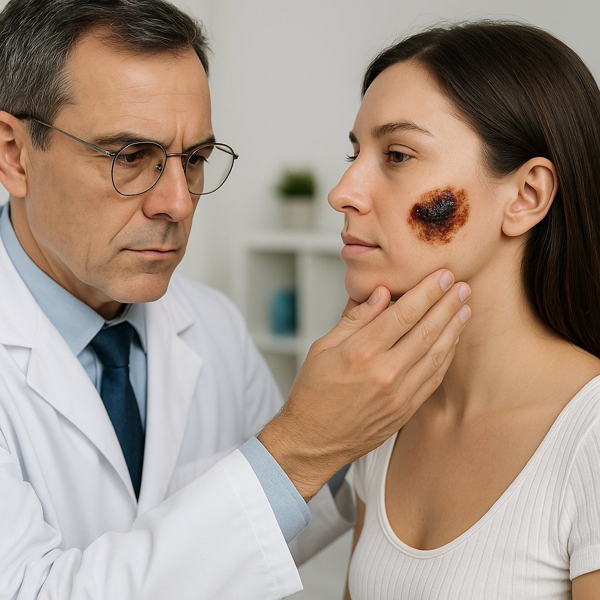

Tipos de Câncer de Pele

O câncer de pele pode ser dividido em dois grandes grupos: melanoma e não melanoma. Os tipos mais comuns são:
1. Carcinoma Basocelular (CBC)
É o tipo mais comum de câncer de pele, representando cerca de 70% dos casos. Surge nas células basais, localizadas na camada mais profunda da epiderme. Geralmente aparece em áreas expostas ao sol, como face, orelhas, pescoço, couro cabeludo, ombros e costas. Tem baixa letalidade e pode ser curado em caso de detecção precoce.
2. Carcinoma Espinocelular (CEC)
É o segundo tipo mais comum, representando cerca de 25% dos casos. Surge nas células escamosas, que compõem a maior parte das camadas superiores da pele. Pode se desenvolver em todas as partes do corpo, embora seja mais comum nas áreas expostas ao sol. Pode se espalhar para outros órgãos se não for tratado adequadamente.
3. Melanoma
É o tipo mais grave de câncer de pele, devido à sua alta possibilidade de metástase. Representa apenas 3% dos casos, mas é responsável por mais de 75% das mortes por câncer de pele. Surge nas células produtoras de melanina (melanócitos). Pode aparecer em qualquer parte do corpo, na pele ou mucosas, na forma de manchas, pintas ou sinais.
Fatores de Risco
Os principais fatores de risco para o desenvolvimento do câncer de pele incluem:
- Exposição excessiva ao sol
- Histórico familiar de câncer de pele
- Pele clara, cabelos loiros ou ruivos
- Presença de múltiplas pintas
- Queimaduras solares frequentes
- Exposição a radiação ultravioleta artificial (câmaras de bronzeamento)
Prevenção e Diagnóstico Precoce
A prevenção do câncer de pele inclui medidas como:
- Uso de protetor solar diariamente
- Evitar exposição ao sol entre 10h e 16h
- Usar roupas protetoras e acessórios como chapéus e óculos de sol
- Realizar autoexame regular da pele
- Consultar um dermatologista periodicamente
Tratamento
O tratamento do câncer de pele varia de acordo com o tipo, localização e estágio da doença. As principais opções incluem:
- Cirurgia para remoção do tumor
- Radioterapia
- Quimioterapia
- Terapia fotodinâmica
- Imunoterapia
É importante estar atento a qualquer mudança na pele, como o aparecimento de manchas, pintas ou feridas que não cicatrizam. Ao notar qualquer alteração suspeita, procure um dermatologista imediatamente. O diagnóstico precoce aumenta significativamente as chances de cura.
Referências
Fonte: Instituto Nacional de Câncer (INCA) - Estimativa 2023: Incidência de Câncer no Brasil